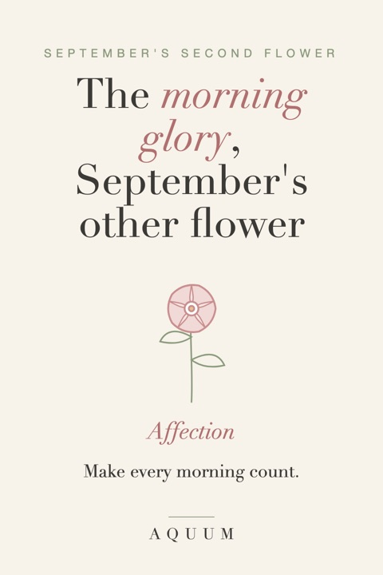

Morning Glory Birth Flower: Meaning and September Gift Ideas
2026-10-01
Written by the team behind Aquum, a small birth flower gift shop. How we make money.

The morning glory is September's second birth flower, next to the aster. It's a fast-climbing vine with heart-shaped leaves and round, funnel-shaped flowers that open with the sunrise and fold closed by the afternoon.
What the morning glory means
The morning glory stands for affection.
- Affection. Its vine wraps around whatever is close, a symbol of love that reaches out and holds on.
- Making the most of each day. Each flower lasts a single morning. The plant is a reminder to enjoy today.
- Unrequited love. In Victorian flower language it could also mean love that isn't returned, so for a romantic gift it's worth adding a note that says what you mean.
A morning glory says: "Every morning with you is a good one."
Morning glories in Japan
In Japan the morning glory is called asagao, "morning face". It became hugely popular in the Edo period, when growers bred unusual colors and shapes, and it's still a classic symbol of summer. Many Japanese schoolchildren grow one as a summer project.
Good to know
Morning glory seeds are toxic if eaten, so keep seed packets away from small children and pets. The vines also spread fast: some gardeners love that, others plant them in pots.
Morning glory or aster?
- The aster means wisdom and patience: a calm, star-shaped autumn flower. Read the aster guide.
- The morning glory is livelier and more affectionate, a sweet choice for an early riser, a cheerful friend, or someone who makes every day count.
September birthday gift ideas with the morning glory
- Morning glory seeds to grow on a fence or balcony next summer.
- A morning glory design on a coffee mug: a flower that opens in the morning belongs on the first cup of the day.
- Aster and morning glory together, both September flowers.
- A coloring page: the second birth flower coloring pages include the morning glory.
More in September birthday gift ideas, and every month's second flower is in second birth flowers by month.